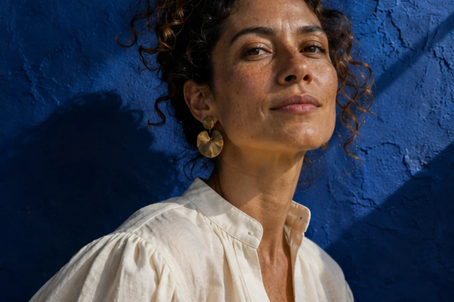

Um retrato à altura do seu trabalho.
Escolha onde a imagem vai aparecer e encontre um horário para fotografar.
Escolher horário
Para o dia da sessão
Escolha peças que usa no contexto do retrato. Leve uma opção extra para testar com a luz do estúdio.